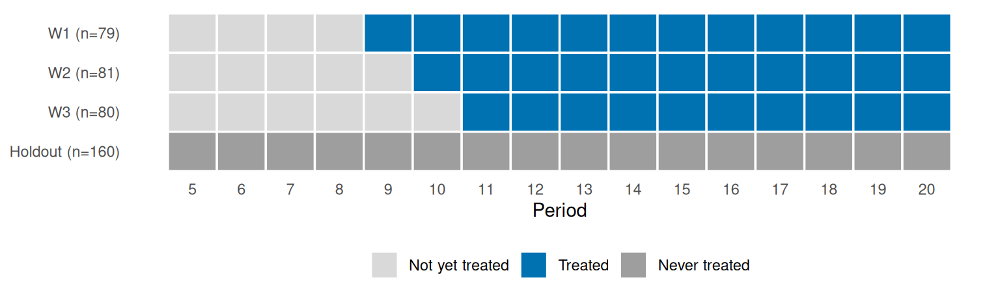
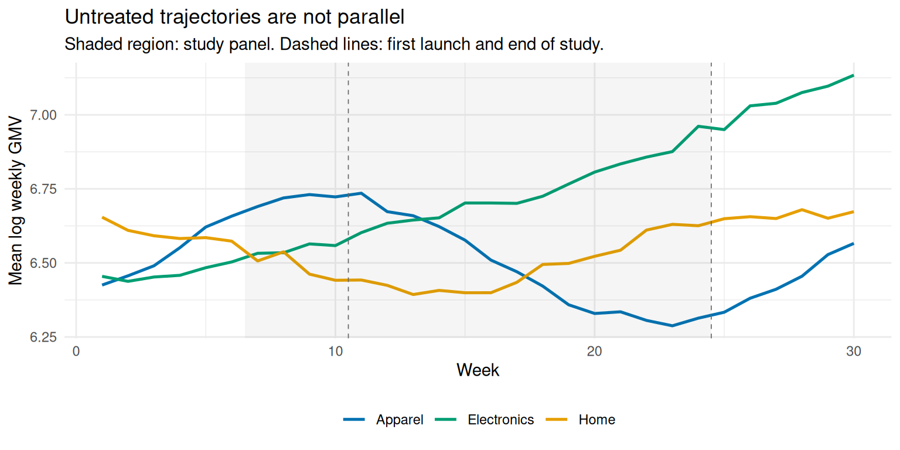
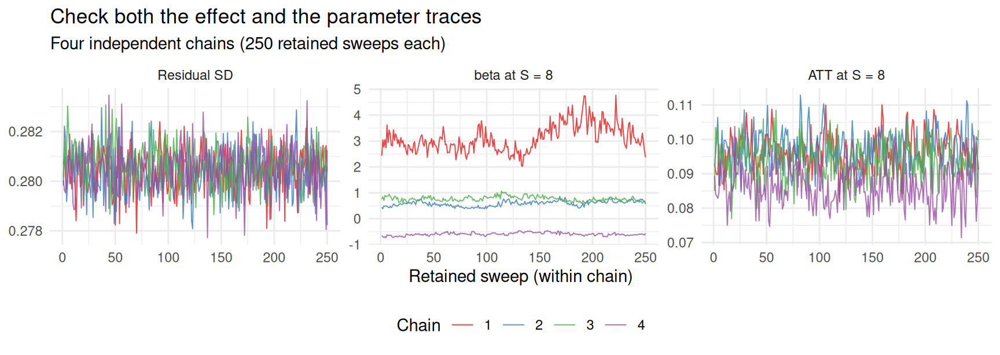
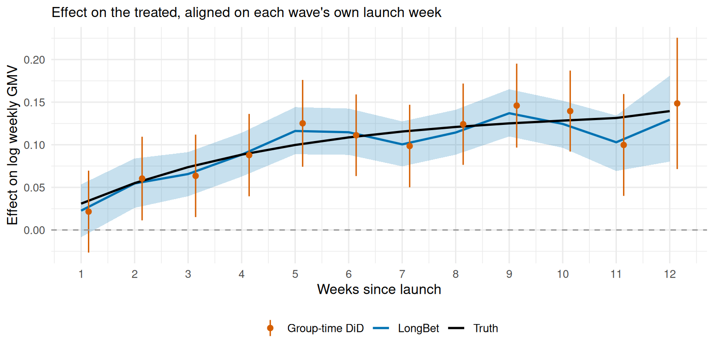
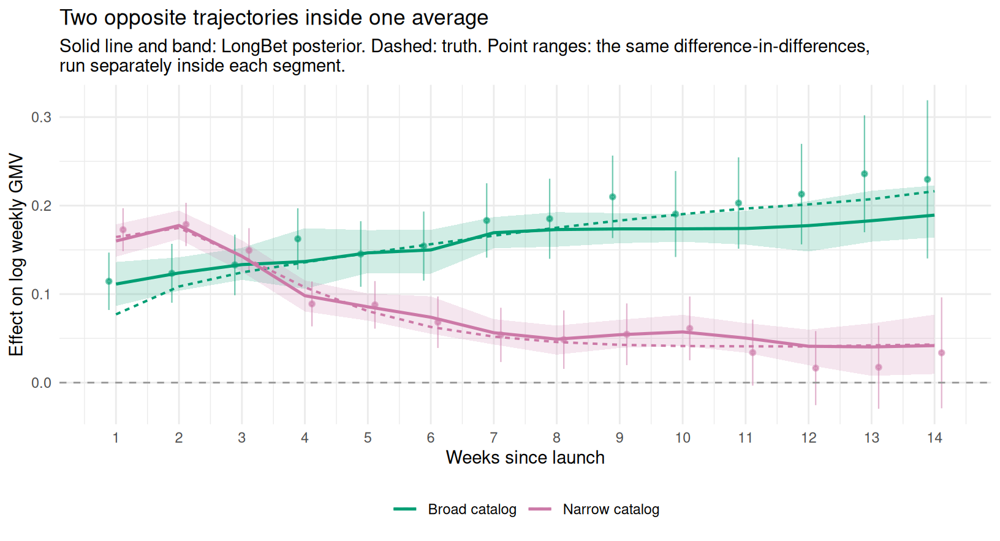
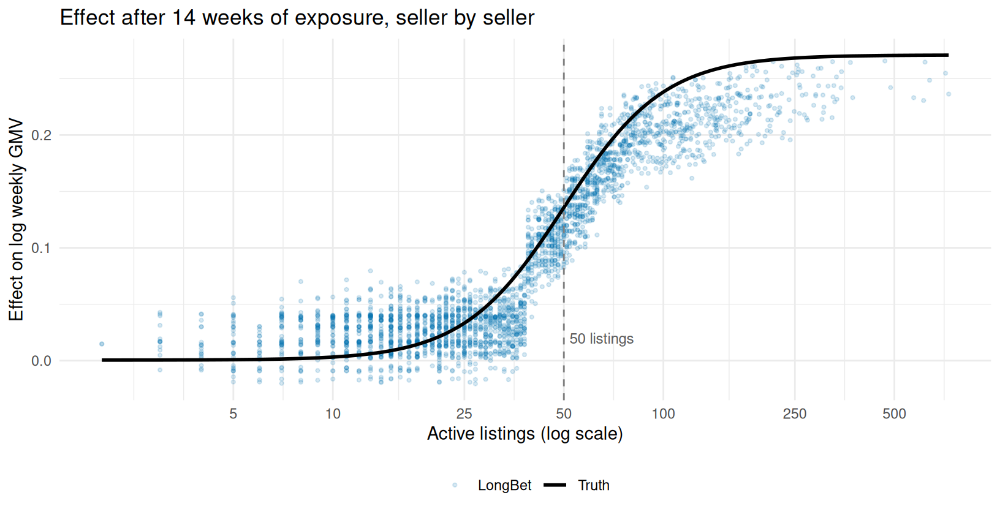
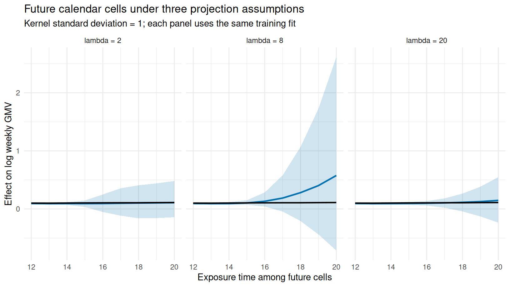

library(longbet)
library(dplyr)
library(tidyr)
library(tibble)
library(ggplot2)
library(purrr)
library(knitr)
set.seed(1982)
PAL <- c(LongBet = "#0072B2", `DiD vs holdout` = "#D55E00",
Truth = "#000000", `Broad catalog` = "#009E73",
`Narrow catalog` = "#CC79A7")22 LongBet: Time-Varying Treatment Effects in Panel Data
22.1 Introduction to LongBet
The models in the previous two chapters answer a question with no time dimension: what is the effect of the treatment on the outcome? In a business, that is rarely the whole question. A feature that lifts revenue by 10% in its first week and fades to nothing by its tenth averages about the same over a ten-week experiment as one that lifts revenue by 5% and holds there. They report the same “average treatment effect.” They are worth completely different amounts a year later, and they lead to opposite decisions.
LongBet, introduced by Wang, Martinez, et al. (2024), extends the Bayesian Causal Forest (BCF) model of Hahn et al. (2020) to panel data so that the treatment effect becomes a function of two things at once: who the unit is, and how long it has been treated. It was designed for short panels with large cross-sections and observed confounders — the shape of data that e-commerce, subscription, and marketplace businesses generate by default.
LongBet models the data generating process as follows:
\[ Y_{it} = \alpha\,\mu(X_i, T=t) + \beta_{S_{it}}\,\nu(X_i, S_{it}, T=t) + \epsilon_{it} \]
where:
- \(Y_{it}\) is the outcome for unit \(i\) at time \(t\)
- \(X_i\) are time-invariant, pre-treatment covariates
- \(T = t\) is calendar time, shared by every unit
- \(S_{it} = \sum_{s \le t} Z_{is}\) is the time elapsed since unit \(i\) adopted the treatment (\(S_{it} = 0\) for a unit that has not adopted yet)
- \(\mu(\cdot)\) is the prognostic function: what the outcome would have done anyway
- \(\alpha\) is a single scalar that lets the sampler rescale the whole prognostic forest. It is given an \(N(0,1)\) prior and drawn each sweep, inherited from XBCF (Krantsevich et al. 2023) where it exists to improve mixing. Its posterior concentrates tightly around 1, and it carries no causal interpretation — do not read it as an effect size
- \(\nu(\cdot)\) is the treatment effect function
- \(\beta_S\) is a Gaussian process over time-since-adoption, capturing the trend in treatment effect shared by all units. Unit \(i\) at time \(t\) is multiplied by the value at its own exposure, \(\beta_{S_{it}}\)
- \(\epsilon_{it}\) is an independent Gaussian error term
Both \(\mu(\cdot)\) and \(\nu(\cdot)\) are XBART forests (He et al. 2019) that are allowed to split on the time dimensions as well as on \(X\). The treatment effect estimator is the contrast between being \(S\) periods into treatment and not being treated at all:
\[ \tau_t(X_i, S) = \beta_S\,\nu(X_i, S, T=t) - \beta_0\,\nu(X_i, 0, T=t), \]
so that the effect realized by unit \(i\) at time \(t\) is \(\tau_{it} = \tau_t(X_i, S_{it})\).
Two pieces of that expression do different jobs, and it is worth separating them. \(\beta_S\) is one curve over time-since-adoption, shared by the whole population: it is where the model pools information about the average shape of the response. \(\nu(X_i, S_{it}, t)\) is a forest, so it can make that shape differ across units — and because it splits on \(S\) too, different kinds of units can have genuinely different shapes, not just different magnitudes of the same shape. The shared \(\beta_S\) is also what makes forecasting possible: because it is a Gaussian process over \(S\), it can be extrapolated past the largest \(S\) in the data.
22.2 Key Features of LongBet
- Time-varying effects. The effect is estimated as a trajectory over time-since-adoption, not a single number.
- Heterogeneity in the trajectory. Because \(\nu\) splits on \(X\) and \(S\) jointly, LongBet can find subpopulations whose effects decay while others’ compound.
- Staggered adoption. Units can be treated at different times; once treated they stay treated. Effects are aligned on \(S\), not on calendar time.
- Separate regularization. As in BCF, prognostic and treatment surfaces get separate forests and separate priors, so the model can be flexible about the baseline while staying conservative about the effect.
- No parallel trends requirement. Identification comes from conditioning on \(X_i\), not from assuming treated and untreated units would have moved in parallel.
- Forecasting. The Gaussian process on \(\beta_S\) projects the effect beyond the end of the observation window.
- Bayesian uncertainty. Every quantity above — including the effect for a single unit at a single time — comes with a posterior.
22.3 What a Panel Model Buys You in a Randomized Experiment
LongBet’s headline claim in Wang, Martinez, et al. (2024) is about observational panels: it does not need the parallel trends assumption that difference-in-differences rests on (Callaway and Sant’Anna 2021; Roth et al. 2023). This chapter deliberately applies it somewhere else — to data from a randomized experiment — and it is worth being precise about why, because the argument changes.
In a randomized rollout you already have identification. Random assignment makes treated and untreated units exchangeable, so parallel trends holds in expectation and a simple difference-in-differences against a holdout is unbiased for the average effect. You do not need a model to believe the number.
What you do not get for free is everything else:
- Precision. A marketplace’s weekly revenue per seller varies by orders of magnitude across sellers and swings seasonally within them. A model of \(\mu(X_i, t)\) explains that variation away before the effect is read off. This is the non-parametric cousin of ANCOVA and of CUPED (Deng et al. 2013), and it is the difference between an experiment that answers your question and one that runs for another quarter.
- Resolution. A difference-in-differences gives you one number per event time. It cannot tell you which sellers those numbers came from unless you pre-specify the subgroups, and every subgroup you add costs you power. LongBet returns a posterior for \(\tau_i(S)\) for every unit at every time-since-adoption, from a single fit.
- Reach. Experiments end; business cases run for a year. The Gaussian process on \(\beta_S\) extrapolates the trajectory past the last week you observed, with intervals that widen as it goes.
Keep the division of labour clear. Randomization is what makes the estimate credible; the model is what makes it useful. If LongBet’s average effect and a simple difference-in-differences against the holdout disagree materially, the simple estimator is the one to trust for the average, and the disagreement is a signal to go debug the model. What the simple estimator cannot do is tell you which sellers to ship to.
NoteAssumptions still required
Randomization buys unconfoundedness and overlap. It does not buy SUTVA, and in a marketplace that omission is not academic: search results are a ranked list, so a treated seller who climbs it does so at the expense of somebody below. What the rollout measures is then the relative advantage of being treated, which is not the same quantity as the effect of treating everyone — and the gap between them is the whole business case. We come back to it once there are dollar figures on the table (Section 22.12), because it is the assumption most likely to make those figures wrong.
22.4 The Business Problem: A Capacity-Constrained Rollout
You are the data scientist at an online marketplace. The product team has built an AI listing optimizer: it rewrites seller titles and descriptions, suggests attributes, and re-crops photos. Early qualitative feedback is enthusiastic. Leadership wants to know whether to make it permanent, and finance wants a number to put in next year’s plan.
There are 3,000 sellers in the pilot population and the optimizer cannot simply be switched on for all of them: each seller needs a supervised migration of their catalog, and the onboarding team can absorb about 450 sellers a week. The rollout is going to be phased whether you like it or not.
That constraint is an opportunity. The field team’s instinct is to start with the sellers most likely to benefit. Doing so would make the rollout order a function of expected outcomes — exactly the targeted selection that makes observational panel data hard to analyze. Instead, you randomize the order: sellers are assigned at random (stratified on vertical, catalog size, and fulfillment status) to one of four weekly launch waves or to a holdout that stays on the old experience for the duration of the study. The result is a randomized staggered rollout — a real experiment that happens to produce panel data with four independent replications of the launch.
Three questions have to be answered before the decision can be made:
- Does the lift last? A rewritten catalog could produce a one-off ranking bump that fades, or a compounding advantage as better listings earn better placement.
- Who does it help? If the effect is concentrated, the right decision is to ship to a segment, not to everyone.
- What is it worth over a year? The study runs 14 weeks after the first launch. The business case runs for 52.
The economics are simple enough to state up front. The marketplace keeps a 12% take rate on gross merchandise value (GMV), and running the optimizer costs about $500 per seller per year in inference, image processing, and support. A seller only earns their keep if the lift in their GMV, valued at the take rate, clears that cost — and because the cost is flat per seller while the benefit scales with the seller’s GMV, the bar is much easier for a large seller to clear than for a small one. Hold on to that asymmetry; it turns out to matter more than the treatment effect itself.
22.5 Simulating the Rollout
As elsewhere in this book we simulate the data so the truth is known and every claim can be checked against it. The outcome is log weekly GMV, which keeps a heavy-tailed dollar quantity roughly Gaussian and makes the treatment effect read as an approximate percentage lift.
The seller population carries five pre-treatment characteristics: the vertical they sell in, whether they use marketplace fulfillment, how many active listings they carry, and two summaries of their own recent history. The untreated trajectory is deliberately non-parallel: apparel sellers swing seasonally, electronics sellers ramp into the holidays, and larger sellers drift upward faster.
The calendar has three parts. Weeks 1–6 are a lookback window used only to build covariates. Weeks 7–24 are the study panel handed to the model: everyone is untreated through week 10, and the four waves launch in weeks 11–14. Weeks 25–30 are simulated but withheld, and exist only so we can score the forecast later.
n <- 3000
week_base <- 1:6 # lookback: builds covariates, never modelled
week_study <- 7:24 # the panel LongBet sees
week_future <- 25:30 # withheld; used only to score the forecast
weeks_all <- c(week_base, week_study, week_future)
LAUNCH <- c(W1 = 11, W2 = 12, W3 = 13, W4 = 14, Holdout = Inf)Sellers and the randomized rollout
vertical <- sample(c("Apparel", "Home", "Electronics"), n,
replace = TRUE, prob = c(0.40, 0.35, 0.25))
fulfilled <- rbinom(n, 1, 0.45)
listings <- pmax(1, round(exp(rnorm(n, log(35), 0.9)))) # active listings
# (pmax guards log(0))
seller_sd <- rnorm(n) # latent seller scale
# Blocked randomization: within each stratum, deal out the five arms in
# fixed proportions and shuffle. This is stratified randomization applied to
# launch *order* rather than to treatment status.
strata <- interaction(
vertical,
cut(listings, quantile(listings, 0:3 / 3), include.lowest = TRUE),
fulfilled, drop = TRUE
)
deal_waves <- function(k) {
arms <- c("W1", "W2", "W3", "W4", "Holdout")
props <- c(0.15, 0.15, 0.15, 0.15, 0.40)
sample(rep(arms, diff(round(k * cumsum(c(0, props))))))
}
wave <- character(n)
for (s in levels(strata)) {
idx <- which(strata == s)
wave[idx] <- deal_waves(length(idx))
}
launch <- LAUNCH[wave]
table(wave)wave
Holdout W1 W2 W3 W4
1201 451 449 449 450 The untreated trajectory
# Seller level: size, catalog breadth, fulfillment, plus idiosyncratic scale.
level_i <- 6.4 + 0.55 * seller_sd + 0.45 * log(listings / 35) +
0.25 * fulfilled + rnorm(n, 0, 0.35)
# Trends differ by vertical and by size: parallel trends is false unit by unit.
drift_i <- 0.004 * seller_sd +
c(Apparel = 0.000, Home = 0.002, Electronics = 0.008)[vertical]
season <- function(v, t) {
ifelse(v == "Apparel", 0.22 * sin(2 * pi * (t - 3) / 26),
ifelse(v == "Home", 0.12 * cos(2 * pi * (t - 1) / 26),
0.35 * (t / 26)^2 - 0.05))
}
Tn <- length(weeks_all)
tmat <- matrix(rep(weeks_all, each = n), n, Tn)
y0 <- matrix(level_i, n, Tn) +
outer(drift_i, weeks_all, "*") +
season(matrix(vertical, n, Tn), tmat) +
matrix(rnorm(n * Tn, 0, 0.28), n, Tn)The treatment effect
This is the heart of the simulation. Each seller’s effect is a blend of two shapes, and the weight on each is a smooth function of catalog breadth:
\[ \tau_i(S) = w_i\underbrace{\left[0.30\left(1 - e^{-S/6}\right)\right]}_{\text{compounding}} + (1 - w_i)\underbrace{\left[0.20\,\tfrac{S}{1.5}e^{1 - S/1.5}\right]}_{\text{novelty}}, \qquad w_i = \text{logit}^{-1}\!\left(\frac{\log L_i - \log 50}{0.35}\right) \]
A seller with a broad catalog (\(L_i\) well above 50 listings) has a lot of inventory for the optimizer to keep improving, and better listings earn better placement, which earns more sales, which earns better placement: their lift climbs toward 30% and stays. A seller with a narrow catalog optimizes their handful of listings once, gets a 20% bump, and reverts. Nothing in the model will be told about the threshold at 50 listings; it has to find it.
Note what this \(\tau_i(S)\) does not contain: calendar time. LongBet is willing to let the effect depend on \(T = t\) as well as on \(S\) — a feature launched in December might land differently from the same feature launched in March — but here it does not, by construction. That keeps the evaluation clean: when we ask the model for the effect at 14 weeks of exposure, there is a single right answer to compare it against, rather than one per launch cohort.
S <- tmat - matrix(launch, n, Tn) + 1
S[!is.finite(S) | S < 0] <- 0
S <- matrix(as.numeric(S), n, Tn) # weeks since launch (0 = untreated)
Z <- matrix(as.integer(S > 0), n, Tn) # treatment indicator panel
w_i <- plogis((log(listings) - log(50)) / 0.35)
h_grow <- function(s) 0.30 * (1 - exp(-s / 6))
h_fade <- function(s) 0.20 * (s / 1.5) * exp(1 - s / 1.5)
tau_true <- ifelse(S > 0, w_i * h_grow(S) + (1 - w_i) * h_fade(S), 0)
y <- y0 + tau_true # observed log weekly GMV
broad <- listings >= 50
cat("Share of sellers with a broad catalog (>= 50 listings):",
scales::percent(mean(broad), 0.1), "\n")Share of sellers with a broad catalog (>= 50 listings): 35.9% Covariates handed to the model
Covariates passed as x are time-invariant: one row per seller, held fixed across the panel. (The fork also accepts genuinely time-varying covariates through a separate argument — see Section 22.12.4 — but nothing in this rollout needs one.) The C++ backend requires the continuous columns to come first, followed by the categorical ones, whose count is passed as pcat. Two of our five columns are summaries of the seller’s own lookback window — their average level and their trend — and they matter more than they look. This is discussed in Section 22.12.1.
wb <- week_base - mean(week_base)
base_level <- rowMeans(y[, week_base])
base_slope <- as.vector((y[, week_base] %*% wb) / sum(wb^2))
x <- cbind(base_level, base_slope, log(listings), # continuous
fulfilled, as.integer(factor(vertical))) # categorical (pcat = 2)
colnames(x) <- c("base_level", "base_slope", "log_listings",
"fulfilled", "vertical")
y_train <- y[, week_study]
z_train <- Z[, week_study]
z_ext <- Z[, c(week_study, week_future)] # extended horizon for forecasting22.6 Looking at the Data Before Modelling It
Two pictures are worth drawing before any model is fit. The first, Figure 22.1, is the design itself: who is treated when.
expand_grid(wave = c("W1", "W2", "W3", "W4", "Holdout"), week = week_study) %>%
mutate(
status = case_when(
wave == "Holdout" ~ "Holdout (never treated)",
week >= LAUNCH[wave] ~ "Treated",
TRUE ~ "Not yet treated"
),
status = factor(status, levels = c("Not yet treated", "Treated",
"Holdout (never treated)")),
wave = factor(wave, levels = c("Holdout", "W4", "W3", "W2", "W1"))
) %>%
ggplot(aes(week, wave, fill = status)) +
geom_tile(colour = "white", linewidth = 0.6) +
scale_fill_manual(values = c(`Not yet treated` = "grey85",
Treated = PAL[["LongBet"]],
`Holdout (never treated)` = "grey62")) +
scale_x_continuous(breaks = week_study) +
labs(x = "Week", y = NULL, fill = NULL,
title = "Four randomized launch waves and a holdout") +
theme_minimal() +
theme(legend.position = "bottom", panel.grid = element_blank())
The second, Figure 22.2, is the thing that would sink a naive analysis: the untreated trajectories are not parallel. Restricting attention to the holdout — whose outcomes are never touched by the treatment — apparel, home, and electronics sellers move in visibly different directions over the study window.
tibble(
vertical = rep(vertical, times = Tn),
week = rep(weeks_all, each = n),
gmv_log = as.vector(y),
wave = rep(wave, times = Tn)
) %>%
filter(wave == "Holdout") %>%
group_by(vertical, week) %>%
summarise(gmv_log = mean(gmv_log), .groups = "drop") %>%
ggplot(aes(week, gmv_log, colour = vertical)) +
geom_line(linewidth = 0.9) +
annotate("rect", xmin = min(week_study) - 0.5, xmax = max(week_study) + 0.5,
ymin = -Inf, ymax = Inf, alpha = 0.06) +
geom_vline(xintercept = c(10.5, 24.5), linetype = "dashed",
colour = "grey40", linewidth = 0.3) +
scale_colour_manual(values = c(Apparel = "#0072B2", Home = "#E69F00",
Electronics = "#009E73")) +
labs(x = "Week", y = "Mean log weekly GMV", colour = NULL,
title = "Untreated trajectories are not parallel",
subtitle = "Shaded region: study panel. Dashed lines: first launch and end of study.") +
theme_minimal() +
theme(legend.position = "bottom")
Because the rollout was randomized, this non-parallelism is not a threat to identification — it is a threat to precision, and a large one. Any estimator that does not explain it has to carry it as noise.
22.7 Fitting LongBet
NoteWhich LongBet this chapter uses
The code below runs ignacio82/longbet, a fork of google/longbet written while this chapter was being drafted. Four things differ, all of them prompted by problems that showed up here:
- Unit-level random intercepts (
random_intercept, on by default). The published model has no unit effects at all, so each unit’s persistent level has to be rebuilt by the prognostic forest out of \(X_i\). Section 22.12.1 measures what that costs and what the fix buys. - A fixed covariance factorisation in the sampler for \(\beta_S\). The published code factors a covariance matrix as \(U\,\mathrm{diag}(s)\) where a factor has to be \(U\,\mathrm{diag}(\sqrt{s})\), which made the training draw of \(\beta\) collapse onto its conditional mean and the credible intervals too narrow.
- A constant mean for the \(\beta_S\) process (
gp_constant_mean, on by default), so that a projection far past the observed window reverts to the level the trajectory settled at rather than to zero. Section 22.11 is where that matters. - Regularization that does not depend on the units of the outcome. The published code derives the leaf-variance priors from the variance of the raw outcome and then applies them to a standardized one, so the same data in dollars rather than log dollars is regularized differently.
- A seed for the projection, and a one-line fix to
predict.longbet(t = NULL), which read a variable from the global environment.
The fork also adds things this chapter does not use: time-varying covariates (Section 22.12.4), unbalanced panels (y may contain NA), binary outcomes by probit augmentation, an optional AR(1) error, and the propensity-score argument that the published version accepts and silently ignores — which matters for observational panels, though not for a randomized rollout like this one. The model, the priors and the estimands are otherwise unchanged. NEWS.md in the fork carries the derivations and the measurements, including for the two options that were implemented, measured, and then left switched off because they made the estimates worse.
fit_time <- system.time(
lb_fit <- longbet(
y = y_train, x = x, x_trt = x, z = z_train, t = week_study,
pcat = 2,
num_sweeps = 200, num_burnin = 60,
num_trees_pr = 60, num_trees_trt = 60,
sig_knl = 1, lambda_knl = 2,
random_intercept = TRUE
)
)A few arguments deserve comment:
xandx_trtare the covariate matrices for the prognostic and treatment forests. They can differ — you might want a richxfor the baseline and a short, interpretablex_trtfor the effect — but here we give both the same five columns.tis the calendar time index of the panel columns. LongBet infers each unit’s time-since-adoption \(S_{it}\) fromzandt; you never construct it yourself.pcat = 2says the last two columns ofxare categorical. The ordering requirement is real and silent: get it wrong and continuous variables are treated as unordered levels.sig_knlandlambda_knlare the variance and lengthscale of the squared exponential kernel on \(\beta_S\). A longer lengthscale forces a smoother effect trajectory.
Prediction takes the fitted object, the covariates, and a treatment panel. Note that the panel we pass for prediction is longer than the one we trained on: this is what triggers the Gaussian process extrapolation of \(\beta_S\) past the largest observed time-since-adoption.
lb_pred <- predict.longbet(
lb_fit, x, x, z_ext,
t = c(week_study, week_future),
random_seed = 1
)
lb_att <- get_att(lb_pred, alpha = 0.05)
WarningAlways pass
t explicitly
predict.longbet() accepts t = NULL, and on google/longbet that branch reads a variable named longbet.fit from the global environment, failing with object 'longbet.fit' not found unless one happens to exist — which it does in the package’s own examples, because they name the fitted object exactly that. The fork reads model$time instead. Either way, t still defaults to the training grid, which silently mismatches a longer prediction panel, so pass it explicitly whenever you are predicting past the end of the study.
Checking the sampler
LongBet is an XBART-style sampler: it grows a fresh forest every sweep rather than nudging an existing one, and longbet() seeds itself internally, so there is no second chain to compare against and no \(\hat{R}\) to compute. What is left is to look at the sweeps — and to be careful about which quantity you look at.
burnin_n <- lb_fit$model_params$burnin
n_sweeps <- ncol(lb_fit$beta_values)
S_show <- 8 # weeks since launch
bind_rows(
tibble(sweep = seq_len(n_sweeps),
value = colMeans(lb_fit$sigma0_draws) * lb_fit$sdy,
series = "Residual SD"),
# beta_values rows run S = 0, 1, 2, ...; att_full rows run S = 1, 2, ...
tibble(sweep = seq_len(n_sweeps),
value = lb_fit$beta_values[S_show + 1, ],
series = "beta at S = 8 (not identified alone)"),
tibble(sweep = (burnin_n + 1):n_sweeps,
value = lb_att$att_full[S_show, ],
series = "ATT at S = 8 (identified)")
) %>%
mutate(series = factor(series, levels = c(
"Residual SD", "beta at S = 8 (not identified alone)",
"ATT at S = 8 (identified)"))) %>%
ggplot(aes(sweep, value)) +
geom_vline(xintercept = burnin_n + 0.5, linetype = "dashed", colour = "grey45") +
geom_line(colour = PAL[["LongBet"]], linewidth = 0.35) +
facet_wrap(~series, scales = "free_y") +
labs(x = "Sweep", y = NULL,
title = "Diagnose the identified quantity, not the parameter",
subtitle = paste0("Dashed line: end of burn-in (sweep ", burnin_n, ")")) +
theme_minimal()
post <- (burnin_n + 1):n_sweeps
cv <- function(v) sd(v) / abs(mean(v))
cat("Coefficient of variation across post-burn-in sweeps\n",
" beta at S = 8: ", round(cv(lb_fit$beta_values[S_show + 1, post]), 3), "\n",
" ATT at S = 8: ", round(cv(lb_att$att_full[S_show, ]), 3), "\n", sep = "")Coefficient of variation across post-burn-in sweeps
beta at S = 8: 0.124
ATT at S = 8: 0.09The residual scale behaves exactly as you would hope. \(\beta_{S=8}\) does not: it wanders slowly over a range of roughly two to one and is still drifting at the last sweep. Taken at face value that is a badly mixing chain, and it would be a reason to distrust everything downstream.
It is not, and the reason is worth internalizing because it recurs in every model of this shape. The treatment term enters as the product \(\beta_S\,\nu(X_i, S, t)\), and nothing in the likelihood pins down how a common scale factor is divided between the two. Halve every \(\beta\), double every leaf of \(\nu\), and the fit is unchanged. The sampler is free to slide along that ridge, and it does — which is what the middle panel shows. The product is identified, and the right panel shows it varying less — not dramatically less, but the swing that matters is the one in the quantity you report, and that one is stationary around its posterior mean. Nothing downstream is at risk, including the projection of Section 22.11: that extrapolates \(\beta\) and multiplies it by \(\nu\) from the same sweep, so the ridge cancels there too.
The practical rule: diagnose the quantity you will report, not the parameter that produces it. Here that means the ATT or the CATT, which get_att() and get_catt() return per sweep. The same trap is waiting anywhere a model multiplies or adds two things it never separately identifies — a global intercept absorbed into a forest, or the cutpoints of an ordinal model that share a shift with the latent scale. Confusing a ridge in the posterior with a failure to converge will send you off lengthening chains that were fine.
22.8 What the Average Effect Says
The natural summary of a staggered rollout is the average effect on the treated as a function of time since launch, with every wave aligned on its own launch week. get_att() does that alignment; the helper below does the same thing for arbitrary subsets and for the known truth, so that everything we plot is aligned identically.
# Align an [n x T x draws] array of unit-level effects on time-since-adoption
# and average over a subset of units, returning a [S x draws] matrix.
event_time_draws <- function(tauhat, z, keep = rep(TRUE, nrow(z))) {
P <- max(rowSums(z))
D <- dim(tauhat)[3]
num <- matrix(0, P, D)
den <- numeric(P)
patt <- apply(z, 1, paste0, collapse = "") # one pattern per launch wave
for (p in unique(patt[keep & rowSums(z) > 0])) {
ii <- which(patt == p & keep)
cols <- which(z[ii[1], ] == 1)
k <- length(cols)
num[1:k, ] <- num[1:k, ] + apply(tauhat[ii, cols, , drop = FALSE], c(2, 3), sum)
den[1:k] <- den[1:k] + length(ii)
}
out <- num / den
out[is.nan(out)] <- NA_real_ # event times no kept unit ever reached
out
}
# Same alignment for a known [n x T] matrix of true effects.
event_time_truth <- function(m, z, keep = rep(TRUE, nrow(z))) {
as.vector(event_time_draws(array(m, c(dim(m), 1)), z, keep))
}
tau_future <- tau_true[, c(week_study, week_future)]
truth_att <- event_time_truth(tau_future, z_ext)
S_observed <- max(rowSums(z_train)) # longest time-since-launch in the study
S_max <- max(rowSums(z_ext)) # longest available for forecastingThe benchmark is the estimator a careful analyst would reach for first: for each wave and each week since its launch, take the change in log GMV relative to the common pre-launch window (weeks 7–10) and subtract the same change among holdout sellers, then pool the waves. Random assignment makes it unbiased; the within-seller differencing removes each seller’s level entirely, which is a stronger adjustment than any covariate.
pre_weeks <- 7:10 # common pre-launch window for every wave
is_hold <- wave == "Holdout"
y_pre <- rowMeans(y[, pre_weeks])
dY <- y - y_pre # change from each seller's own baseline
colnames(dY) <- weeks_all # index by calendar week, not column position
# `keep` restricts the whole comparison -- treated waves and holdout alike --
# to a subpopulation, which is how the same estimator is run on a subgroup
# later in the chapter.
did_event_study <- function(keep = rep(TRUE, n)) {
hold <- is_hold & keep
map_dfr(1:S_observed, function(s) {
# Waves that have reached event time s before the study window closes
ws <- c("W1", "W2", "W3", "W4")
ws <- ws[LAUNCH[ws] + s - 1 <= max(week_study)]
nt <- vapply(ws, function(w) sum(wave == w & keep), integer(1))
ws <- ws[nt > 1]; nt <- nt[nt > 1] # a wave needs 2+ kept sellers
a <- nt / sum(nt) # sample-size weights
col <- match(as.integer(LAUNCH[ws] + s - 1), weeks_all)
treated_mean <- vapply(seq_along(ws), function(j)
mean(dY[wave == ws[j] & keep, col[j]]), numeric(1))
# variance *of each wave mean*, i.e. already divided by that wave's size
var_treated_mean <- vapply(seq_along(ws), function(j)
var(dY[wave == ws[j] & keep, col[j]]) / nt[j], numeric(1))
# Every wave is compared against the *same* holdout sellers, so the holdout
# contributes one weighted combination per seller. Treating the waves'
# holdout means as independent would understate the variance.
h_combo <- as.vector(dY[hold, col, drop = FALSE] %*% a)
est <- sum(a * treated_mean) - mean(h_combo)
se <- sqrt(sum(a^2 * var_treated_mean) + var(h_combo) / sum(hold))
tibble(s = s, estimate = est, lower = est - 1.96 * se, upper = est + 1.96 * se)
})
}
did_holdout <- did_event_study()att_df <- tibble(
s = seq_len(S_max),
estimate = lb_att$att,
lower = lb_att$intervals[1, ],
upper = lb_att$intervals[2, ],
truth = truth_att
) %>% filter(s <= S_observed)
ggplot(att_df, aes(s)) +
geom_ribbon(aes(ymin = lower, ymax = upper, fill = "LongBet"), alpha = 0.22) +
geom_line(aes(y = estimate, colour = "LongBet"), linewidth = 0.9) +
geom_line(aes(y = truth, colour = "Truth"), linewidth = 0.9) +
geom_pointrange(
data = did_holdout,
aes(x = s, y = estimate, ymin = lower, ymax = upper,
colour = "DiD vs holdout"),
size = 0.28, position = position_nudge(x = 0.14)
) +
geom_hline(yintercept = 0, linetype = "dashed", colour = "grey60") +
scale_colour_manual(values = PAL) +
scale_fill_manual(values = PAL, guide = "none") +
scale_x_continuous(breaks = 1:S_observed) +
labs(
x = "Weeks since launch", y = "Effect on log weekly GMV", colour = NULL,
title = "The average lift fades over the first three months",
subtitle = "Effect on the treated, aligned on each wave's own launch week"
) +
theme_minimal() +
theme(legend.position = "bottom")
ins_ <- seq_len(S_observed)
score <- function(est, lo, hi, truth) {
tibble(
RMSE = sqrt(mean((est - truth)^2)),
`Mean bias` = mean(est - truth),
`Interval width` = mean(hi - lo),
`Contained truth` = sprintf("%d of %d", sum(truth >= lo & truth <= hi), length(truth))
)
}
bind_rows(
score(att_df$estimate, att_df$lower, att_df$upper, att_df$truth) %>%
mutate(Estimator = "LongBet", .before = 1),
score(did_holdout$estimate, did_holdout$lower, did_holdout$upper,
truth_att[ins_]) %>%
mutate(Estimator = "DiD vs holdout", .before = 1)
) %>%
kable(digits = 4, caption = paste(
"Accuracy and precision of the two estimators across the",
S_observed, "observed event times. Both are aimed at the same estimand."
))| Estimator | RMSE | Mean bias | Interval width | Contained truth |
|---|---|---|---|---|
| LongBet | 0.0079 | -0.0013 | 0.0329 | 13 of 14 |
| DiD vs holdout | 0.0091 | 0.0039 | 0.0556 | 14 of 14 |
Both estimators recover the shape, which is the reassurance we wanted: the model is not inventing anything the randomization does not support. The difference is width. LongBet’s intervals are 1.7 times narrower on average, and that is not a free lunch — it is the payoff for having modelled \(\mu(X_i, t)\) explicitly rather than differencing it away. The same precision would otherwise have to be bought with a bigger experiment or a longer one.
ImportantOne realization is not a coverage study
The “contained truth” column above is not an estimate of coverage. The 14 event times share the same treated sellers and the same holdout, so their errors are strongly correlated: a single unlucky draw can push the whole curve off at once. Interval width is stable enough to compare from one run; coverage is not. Wang, Martinez, et al. (2024) report 94%–98% coverage for LongBet’s ATT across 100 Monte Carlo replications of a similar design, which is the kind of evidence that claim requires. And keep in mind that LongBet’s intervals rest on assumptions the difference-in-differences intervals do not need — that the covariates capture what distinguishes one seller from another, and that the errors are independent across weeks. Section 22.12 is about what happens when they do not.
Read literally, Figure 22.4 is discouraging. The lift peaks at about 15.1% two weeks after launch, slides for the next month and a half, and is still only 10.2% at week 14 — about a third of the peak surrendered. That is the signature of a novelty effect, and the standard conclusion is that the optimizer buys a temporary bump not worth a permanent cost. Every number on that chart is correct. The conclusion drawn from it is wrong.
22.9 What the Average Hides
The pooled curve in Figure 22.4 is an average over two populations that are doing opposite things. LongBet gives us the posterior for every seller at every event time, so splitting it costs nothing but a subset.
segment_att <- function(keep, label) {
d <- event_time_draws(lb_pred$tauhats, z_ext, keep)
tibble(
s = seq_len(nrow(d)),
estimate = rowMeans(d),
lower = apply(d, 1, quantile, 0.025),
upper = apply(d, 1, quantile, 0.975),
truth = event_time_truth(tau_future, z_ext, keep),
segment = label
)
}
segments_df <- bind_rows(
segment_att(broad, "Broad catalog"),
segment_att(!broad, "Narrow catalog")
) %>% filter(s <= S_observed)
# The same difference-in-differences as before, but run inside each segment:
# treated sellers of that type against holdout sellers of that type.
segments_did <- bind_rows(
did_event_study(broad) %>% mutate(segment = "Broad catalog"),
did_event_study(!broad) %>% mutate(segment = "Narrow catalog")
)
ggplot(segments_df, aes(s, colour = segment, fill = segment)) +
geom_ribbon(aes(ymin = lower, ymax = upper), alpha = 0.18, colour = NA) +
geom_pointrange(data = segments_did,
aes(y = estimate, ymin = lower, ymax = upper),
size = 0.18, alpha = 0.55, linewidth = 0.4,
position = position_dodge(0.45), show.legend = FALSE) +
geom_line(aes(y = estimate), linewidth = 0.9) +
geom_line(aes(y = truth), linewidth = 0.7, linetype = "22") +
geom_hline(yintercept = 0, linetype = "dashed", colour = "grey60") +
scale_colour_manual(values = PAL) +
scale_fill_manual(values = PAL, guide = "none") +
scale_x_continuous(breaks = 1:S_observed) +
labs(
x = "Weeks since launch", y = "Effect on log weekly GMV", colour = NULL,
title = "Two opposite trajectories inside one average",
subtitle = paste("Solid line and band: LongBet posterior. Dashed: truth.",
"Point ranges: the same difference-in-differences,\nrun",
"separately inside each segment.")
) +
theme_minimal() +
theme(legend.position = "bottom")
inner_join(
segments_df %>% group_by(segment) %>%
summarise(LongBet = mean(upper - lower), .groups = "drop"),
segments_did %>% group_by(segment) %>%
summarise(`Subgroup DiD` = mean(upper - lower), .groups = "drop"),
by = "segment"
) %>%
mutate(Ratio = `Subgroup DiD` / LongBet) %>%
rename(Segment = segment) %>%
kable(digits = c(0, 4, 4, 1), caption = paste(
"Mean interval width by segment over the", S_observed,
"observed event times."
))| Segment | LongBet | Subgroup DiD | Ratio |
|---|---|---|---|
| Broad catalog | 0.0615 | 0.0936 | 1.5 |
| Narrow catalog | 0.0384 | 0.0684 | 1.8 |
The subgroup difference-in-differences tells the same story, and that is worth being honest about: with two segments this large, the simple estimator gets there too. What it needed was for someone to decide in advance that catalog breadth was the variable to split on — and it pays for the privilege with intervals 62% wider, because subsetting discards exactly the pooling that made Figure 22.4 precise. The gap widens as the slices get finer: quintiles of catalog size, or breadth crossed with vertical, quickly leave the subgroup estimator with error bars taller than the differences it is meant to resolve.
Nothing told the model where to split. It was handed log_listings as one of five covariates and found, on its own, that the shape of the response over time-since-launch depends on it. To see how sharply, we can ask the model for the effect of a full quarter of exposure for every seller in the population, whether or not they were actually treated: build a treatment panel in which everyone launches in week 11 and read off the last column.
# Counterfactual panel: every seller launches in week 11.
z_all <- cbind(matrix(0L, n, sum(week_study < 11)),
matrix(1L, n, sum(week_study >= 11)))
pred_all <- predict.longbet(lb_fit, x, x, z_all, t = week_study, random_seed = 1)
S_target <- ncol(z_all) - sum(week_study < 11) # = 14 weeks of exposure
tau_hat_draws <- pred_all$tauhats[, ncol(z_all), ] # [n x draws] at S_target
tau_hat <- rowMeans(tau_hat_draws)
tau_truth_S <- w_i * h_grow(S_target) + (1 - w_i) * h_fade(S_target)tibble(listings = listings, estimate = tau_hat, truth = tau_truth_S) %>%
ggplot(aes(listings)) +
geom_point(aes(y = estimate, colour = "LongBet"), alpha = 0.16, size = 0.8) +
geom_line(aes(y = truth, colour = "Truth"), linewidth = 1) +
geom_vline(xintercept = 50, linetype = "dashed", colour = "grey50") +
annotate("text", x = 52, y = 0.02, label = "50 listings",
hjust = 0, size = 3.2, colour = "grey35") +
scale_x_log10(breaks = c(5, 10, 25, 50, 100, 250, 500)) +
scale_colour_manual(values = PAL) +
labs(
x = "Active listings (log scale)", y = "Effect on log weekly GMV",
colour = NULL,
title = "Effect after 14 weeks of exposure, seller by seller"
) +
theme_minimal() +
theme(legend.position = "bottom")
tibble(
Quantity = c("Correlation with truth", "RMSE", "Mean absolute error"),
Value = c(cor(tau_hat, tau_truth_S),
sqrt(mean((tau_hat - tau_truth_S)^2)),
mean(abs(tau_hat - tau_truth_S)))
) %>%
kable(digits = 3, caption = paste(
"Quality of the seller-level effect estimates after", S_target,
"weeks of exposure."
))| Quantity | Value |
|---|---|
| Correlation with truth | 0.966 |
| RMSE | 0.026 |
| Mean absolute error | 0.021 |
This is the resolution a difference-in-differences cannot give you. It is one posterior per seller, obtained without pre-registering a single subgroup.
22.10 The Decision
The question was never “what is the average treatment effect.” It was whether to make the optimizer permanent, and for whom. The marketplace keeps 12% of GMV and the optimizer costs $500 per seller per year, so a seller is worth enabling only if the extra GMV they generate, valued at the take rate, clears that cost.
We value one year of exposure per seller. For the first 14 weeks we use the model’s own trajectory, \(\hat\tau_i(1), \dots, \hat\tau_i(14)\); for the remaining 38 weeks we hold the effect at its week-14 level. That second assumption is the one worth arguing about, and Section 22.11 is where we test how far it can be defended. Because the model estimates a shift in log GMV and the treatment does not change the shape of the residual distribution, \(e^{\hat\tau} - 1\) is the proportional effect on mean GMV: the \(\sigma^2/2\) term in the log-normal mean appears on both sides of the ratio and cancels. Note that the code exponentiates each posterior draw and averages afterwards. Averaging first and exponentiating once — plugging \(\bar{\hat\tau}\) into \(e^{\tau} - 1\) — would understate the lift, because \(\mathbb{E}[e^{\tau}] \ge e^{\mathbb{E}[\tau]}\) by Jensen’s inequality. The difference is small at these effect sizes and embarrassing at large ones.
TAKE_RATE <- 0.12
ANNUAL_COST <- 500
HOLD_WEEKS <- 52 - S_target # weeks held at the week-14 effect
gmv_week <- rowMeans(exp(y[, week_base])) # observed baseline $/week per seller
# Effect trajectory for every seller over 14 weeks of exposure: [n x 14 x draws]
tau_path_draws <- pred_all$tauhats[, (sum(week_study < 11) + 1):ncol(z_all), ]
# Annual GMV lift, expressed in "weeks of baseline GMV": [n x draws]
annual_lift <- apply(exp(tau_path_draws) - 1, c(1, 3), sum) +
HOLD_WEEKS * (exp(tau_hat_draws) - 1)
net_draws <- TAKE_RATE * gmv_week * annual_lift - ANNUAL_COST
p_worth <- rowMeans(net_draws > 0)
# The same quantity computed from the known truth, for scoring the decision.
annual_lift_true <- rowSums(exp(outer(w_i, 1:S_target, function(a, s)
a * h_grow(s) + (1 - a) * h_fade(s))) - 1) +
HOLD_WEEKS * (exp(tau_truth_S) - 1)
net_true <- TAKE_RATE * gmv_week * annual_lift_true - ANNUAL_COST
breakeven <- ANNUAL_COST / (TAKE_RATE * 52 * gmv_week)
cat("Break-even annual GMV lift -- median seller: ",
scales::percent(median(breakeven), 0.1),
"; the smallest quarter of sellers need at least ",
scales::percent(quantile(breakeven, 0.75), 0.1), "\n", sep = "")Break-even annual GMV lift -- median seller: 11.0%; the smallest quarter of sellers need at least 18.7%policy_value <- function(keep, label) {
if (!any(keep)) {
return(tibble(Policy = label, Sellers = 0L,
`Estimated (k/yr)` = 0, `95% CrI` = "--",
`Realized (k/yr)` = 0))
}
total <- colSums(net_draws[keep, , drop = FALSE])
tibble(
Policy = label,
Sellers = sum(keep),
`Estimated (k/yr)` = mean(total) / 1000,
`95% CrI` = sprintf("[%.0f, %.0f]", quantile(total, 0.025) / 1000,
quantile(total, 0.975) / 1000),
`Realized (k/yr)` = sum(net_true[keep]) / 1000
)
}
# Shortfall of the model's own valuation against the realized value, for the
# risk-neutral policy: how conservative is the business case it produces?
rn_keep <- rowMeans(net_draws) > 0
rn_shortfall <- 1 - sum(rowMeans(net_draws)[rn_keep]) / sum(net_true[rn_keep])
bind_rows(
policy_value(rep(FALSE, n), "Kill the feature"),
policy_value(rep(TRUE, n), "Ship to everyone"),
policy_value(broad, "Ship to broad catalogs (>= 50 listings)"),
policy_value(rowMeans(net_draws) > 0,"Ship where E(net value) > 0"),
policy_value(p_worth >= 0.90, "Ship where P(net value > 0) >= 0.90"),
policy_value(net_true > 0, "Oracle (knows the truth)")
) %>%
kable(digits = 0, caption = paste0(
"Annual net marketplace revenue under five rollout policies, in thousands ",
"of US dollars per year. 'Estimated' is the posterior from the fitted ",
"model; 'Realized' scores the same policy against the true effects."
))| Policy | Sellers | Estimated (k/yr) | 95% CrI | Realized (k/yr) |
|---|---|---|---|---|
| Kill the feature | 0 | 0 | – | 0 |
| Ship to everyone | 3000 | 1092 | [445, 1920] | 1229 |
| Ship to broad catalogs (>= 50 listings) | 1077 | 1532 | [985, 2213] | 1644 |
| Ship where E(net value) > 0 | 1225 | 1662 | [1070, 2430] | 1776 |
| Ship where P(net value > 0) >= 0.90 | 990 | 1628 | [1066, 2353] | 1739 |
| Oracle (knows the truth) | 1307 | 1643 | [1048, 2429] | 1796 |
tibble(
Segment = c("Narrow catalog (< 50 listings)", "Broad catalog (>= 50 listings)"),
Sellers = c(sum(!broad), sum(broad)),
`Median true lift after 14 weeks` = scales::percent(
c(median(exp(tau_truth_S[!broad]) - 1), median(exp(tau_truth_S[broad]) - 1)), 0.1),
`Share actually worth enabling` = scales::percent(
c(mean(net_true[!broad] > 0), mean(net_true[broad] > 0)), 0.1)
) %>%
kable(caption = paste(
"Effect size and economic value do not select the same sellers.",
"'Worth enabling' means the true annual net value exceeds zero."
))| Segment | Sellers | Median true lift after 14 weeks | Share actually worth enabling |
|---|---|---|---|
| Narrow catalog (< 50 listings) | 1923 | 2.7% | 16.2% |
| Broad catalog (>= 50 listings) | 1077 | 23.6% | 92.5% |
Four things to take from these tables.
First, blanket rollout is profitable and still leaves a great deal on the table. Shipping to everyone beats killing the feature, which is the conclusion a well-run experiment reporting only an average effect would reach — and it is worth roughly a third less than the best available policy, because a large share of the population is being charged $500 a year for an effect that has gone to zero long before the bill arrives.
Second, and less obviously, effect heterogeneity is not value heterogeneity. The “broad catalog” rule follows the treatment effect, which is what Figure 22.5 and Figure 22.6 are about. The money follows effect times seller size, because the $500 is flat. The second table prices that gap: roughly one narrow-catalog seller in six is worth enabling anyway, because they are large enough that a small residual lift still pays the bill, while about one broad-catalog seller in thirteen is not. A rule read straight off the heterogeneity plot gets both groups wrong. The rule you want is written on the posterior of net value, not on the posterior of the effect.
Third, the risk-neutral rule is the one the arithmetic asks for. If the objective is expected profit and nothing else, the Bayes-optimal decision is to enable seller \(i\) whenever \(\mathbb{E}[\text{net value}_i \mid \text{data}] > 0\) — no threshold to choose, and it lands within a couple of percent of the oracle. The P(net value > 0) >= 0.90 rule is a different objective: it trades expected profit for a lower chance of enabling a seller who turns out not to deserve it. That is not irrational. Onboarding capacity is finite, switching a seller off again after three months is a real relationship cost, and a programme that visibly misfires on a tenth of its participants can lose its funding regardless of the aggregate. But it should be a decision someone makes on those grounds, not the accidental consequence of reaching for a 95% interval out of habit.
Fourth, the model is conservative about the money. The estimated column sits below the realized column for every policy — by 6% on the risk-neutral rule. That is the treatment prior doing its job: BCF-style models shrink \(\tau\) toward homogeneity, and because the dollar total is dominated by the largest sellers, shrinkage that looks mild on the log scale is not mild once it is multiplied by their GMV. A second, opposing force is present too — selecting sellers on P(net value > 0) >= 0.90 and then valuing that same selection with the same posterior double-counts the noise that pushed marginal sellers over the threshold. Here shrinkage is the larger of the two, but on a smaller experiment, or with a looser threshold, the winner’s curse can dominate.
Outside a simulation there is no realized column to check against, and the standard defence is cross-fitting: split the sellers, fit the model and choose the targeting rule on one half, then value that rule using the other half’s data. The selection and the valuation no longer share the noise, so the business case you take to finance is one the finance team can hold you to. It costs you nothing but a second fit.
22.11 Projecting Past the End of the Study
The business case runs for a year; the study ran for 14 weeks after the first launch. LongBet is the only tool in this chapter that will say anything about week 20, and it is worth being precise about what it is actually doing when it does.
Prediction on a treatment panel longer than the training panel triggers Gaussian process extrapolation of \(\beta_S\): the shared factor is projected forward under a squared-exponential kernel whose variance and lengthscale you supply as sigma and lambda. Two properties of that machinery decide how much the projection is worth:
- Only \(\beta_S\) is extrapolated. The forest \(\nu(X_i, S, t)\) has no splits beyond the largest \(S\) it was trained on, so it is frozen at its last value. Whatever shape heterogeneity the forest discovered inside the window is rescaled by the projection, not extended by it.
- The Gaussian process has mean zero. Far enough past the data, the projection says the effect goes away — because that is what the prior says, not because the data said so.
lambdacontrols how fast “far enough” arrives.
Weeks 25–30 of our simulation were never shown to the model, so we can score the projection instead of admiring it. (The projected draws are not seeded reproducibly — see Section 22.12 — so re-running this code moves the numbers to the right of week 14 a little, while everything to the left of it is fixed.)
gp_grid <- expand_grid(sigma = c(0.3, 1.0), lambda = c(2, 5, 8, 12, 20))
gp_runs <- pmap_dfr(gp_grid, function(sigma, lambda) {
pr <- predict.longbet(lb_fit, x, x, z_ext, t = c(week_study, week_future),
sigma = sigma, lambda = lambda, random_seed = 1)
a <- get_att(pr, alpha = 0.05)
tibble(sigma = sigma, lambda = lambda, s = seq_len(S_max),
estimate = a$att, lower = a$intervals[1, ], upper = a$intervals[2, ])
})gp_runs %>%
filter(s > S_observed) %>%
left_join(tibble(s = seq_len(S_max), truth = truth_att), by = "s") %>%
group_by(sigma, lambda) %>%
summarise(
RMSE = sqrt(mean((estimate - truth)^2)),
`Mean width` = mean(upper - lower),
`Contained truth` = sprintf("%d of %d", sum(truth >= lower & truth <= upper), n()),
.groups = "drop"
) %>%
kable(digits = 4, caption = paste0(
"Projection quality over the ", S_max - S_observed,
" withheld weeks, across Gaussian process settings. The truth over this ",
"window is essentially flat near ",
scales::percent(mean(truth_att[(S_observed + 1):S_max]), 0.1), "."
))| sigma | lambda | RMSE | Mean width | Contained truth |
|---|---|---|---|---|
| 0.3 | 2 | 0.0191 | 0.2467 | 6 of 6 |
| 0.3 | 5 | 0.0132 | 0.1558 | 6 of 6 |
| 0.3 | 8 | 0.0261 | 0.1197 | 5 of 6 |
| 0.3 | 12 | 0.0751 | 0.1238 | 1 of 6 |
| 0.3 | 20 | 0.0647 | 0.0788 | 1 of 6 |
| 1.0 | 2 | 0.0259 | 0.5476 | 6 of 6 |
| 1.0 | 5 | 0.0158 | 0.3606 | 6 of 6 |
| 1.0 | 8 | 0.0271 | 0.1996 | 6 of 6 |
| 1.0 | 12 | 0.0228 | 0.1448 | 5 of 6 |
| 1.0 | 20 | 0.1048 | 0.1936 | 1 of 6 |
fc_show <- gp_runs %>%
filter(sigma == 1.0, lambda %in% c(2, 8, 20)) %>%
mutate(setting = factor(paste0("lambda = ", lambda),
levels = paste0("lambda = ", c(2, 8, 20))))
ggplot(fc_show, aes(s)) +
geom_ribbon(aes(ymin = lower, ymax = upper), fill = PAL[["LongBet"]], alpha = 0.18) +
geom_line(aes(y = estimate), colour = PAL[["LongBet"]], linewidth = 0.9) +
geom_line(data = tibble(s = seq_len(S_max), truth = truth_att),
aes(y = truth), colour = PAL[["Truth"]], linewidth = 0.8) +
geom_vline(xintercept = S_observed + 0.5, linetype = "dashed", colour = "grey40") +
geom_hline(yintercept = 0, linetype = "dotted", colour = "grey60") +
facet_wrap(~setting) +
labs(x = "Weeks since launch", y = "Effect on log weekly GMV",
title = "The same fit, three Gaussian process lengthscales",
subtitle = "Black: truth. Blue: LongBet posterior mean and 95% band. sigma = 1 throughout.") +
theme_minimal()
Two lessons come out of that table and figure, and neither is about LongBet specifically.
The lengthscale decides how much of the past the projection listens to, and the two ends fail in opposite directions. A short lambda stops listening almost immediately and reverts to the process mean, which is why the left panel of Figure 22.7 holds a level rather than collapsing — with a zero-mean process, as published LongBet has, that same setting walks the effect to zero and would tell you to kill a feature that works. A long lambda does the opposite: it conditions on the whole observed path, and because that path declines it keeps declining, straight through zero by week 20 in the right panel. Something in the middle holds the recent level and widens honestly.
Nothing in the observed window tells you which is right. The in-window fit is identical in all three panels; the fits are the same fit. You are choosing a prior about how product effects behave in your business, and it is worth choosing it deliberately rather than inheriting whichever default the package shipped with.
A longer lengthscale buys confidence before it buys accuracy. Watch the bands: they narrow as lambda grows, because the projected periods are more strongly correlated with periods actually observed. That is a real consequence of the prior. But it means the settings that look most decisive are the ones committing hardest to an assumption nothing checked — the right-hand panel is both the most confident and the only one that is wrong. Widening sigma is not a way out either; the table shows it buys coverage by buying width, which at short lengthscales means a band running from -0.25 to +0.47.
One thing worth checking before you trust any of this, because it is not guaranteed: how much of the trajectory actually lives in the factor being projected.
post_sweeps <- (lb_fit$model_params$burnin + 1):ncol(lb_fit$beta_values)
beta_post <- rowMeans(lb_fit$beta_values[, post_sweeps]) # beta_S, S = 0..14
cat("Shared factor beta_S falls ",
scales::percent(1 - beta_post[length(beta_post)] / max(beta_post), 1),
" from its peak.\n",
"True average effect falls ",
scales::percent(1 - truth_att[S_observed] / max(truth_att[ins_]), 1),
" from its peak.\n", sep = "")Shared factor beta_S falls 34% from its peak.
True average effect falls 32% from its peak.\(\beta_S\) sheds close to half of its peak, against a third for the average effect. The forest absorbs the difference by making \(\nu\) increase in \(S\). That split is a perfectly good description of the data inside the window — but it parks a large share of the late-window dynamics inside the component that does not extrapolate. It is why the projections in the table that miss, miss low.
Tip
split_time_trt: shape heterogeneity or a clean forecast
longbet() takes split_time_trt, which controls whether the treatment forest may split on time-since-adoption. It is the switch that governs this trade-off directly:
split_time_trt = TRUE(the default, used here) lets different kinds of units have different effect shapes — which is the only reason Figure 22.5 works — at the cost of parking dynamics in a component that cannot be projected.split_time_trt = FALSEforces \(\nu(X_i, t)\) to be constant in \(S\), so \(\tau_i(S) = (\beta_S - \beta_0)\,\nu(X_i, t)\): one shared shape, scaled per unit. Every unit’s trajectory is then a rescaling of \(\beta_S\), which is exactly the thing the Gaussian process extrapolates, so projections behave much better — and the compounding-versus-fading split this chapter is about becomes inexpressible, because every unit’s path is now the same curve up to a scale factor.
Fit both when the forecast matters. If they disagree about the trajectory, the disagreement is telling you that your effect’s shape is heterogeneous, and that the forecast from either one deserves a wide error bar.
The practical guidance that follows is deliberately modest. Use the projection to ask how sensitive is my business case to the effect decaying, not to produce the number that goes in the plan. Set lambda at least as long as the horizon you intend to project. And sanity check it against what you can already see: in Figure 22.5 the broad-catalog trajectory is at its maximum at week 14 with no sign of turning down, so any projection in which it collapses is contradicting evidence you already have.
22.12 Practical Notes
Where a unit’s own level comes from
This is the single most consequential thing to get right, and it is easy to miss. In the published model LongBet has no unit effects at all. Everything it knows about a seller has to arrive through the time-invariant covariate vector \(X_i\). A within-unit difference-in-differences removes each seller’s level exactly and for free; LongBet has to reconstruct it.
There are two ways to give it what it needs, and they are worth comparing head to head. The first is to build the level into \(X_i\) yourself, which is why base_level and base_slope — the seller’s mean and trend over a lookback window deliberately excluded from the modelled panel — are the first two columns of x. The second is to let the model estimate a unit effect directly, which is what random_intercept = TRUE does:
\[ Y_{it} = \alpha\,\mu(X_i, T=t) + \beta_{S_{it}}\,\nu(X_i, S_{it}, T=t) + \gamma_i + \epsilon_{it}, \qquad \gamma_i \sim \mathcal{N}(0, \sigma_\gamma^2). \]
Conditional on the forests, the residual \(Y_{it} - \alpha\mu - \beta\nu\) is just \(\gamma_i + \epsilon_{it}\), so each \(\gamma_i\) has an exact Gaussian full conditional and the whole thing is one more conjugate Gibbs block per sweep. The order matters: \(\gamma_i\) is drawn conditional on the current treatment fit, so a seller’s post-launch weeks do not drag their baseline upward. That is precisely the contamination that makes naive within-unit demeaning unusable under staggered adoption — subtract a treated unit’s own mean and you subtract part of the effect you are trying to measure.
Fitting all four combinations settles which you need:
x_thin <- x[, c("log_listings", "fulfilled", "vertical")] # pcat still 2
fit_variant <- function(xmat, ri) {
f <- longbet(y = y_train, x = xmat, x_trt = xmat, z = z_train,
t = week_study, pcat = 2,
num_sweeps = 200, num_burnin = 60,
num_trees_pr = 60, num_trees_trt = 60,
sig_knl = 1, lambda_knl = 2, random_intercept = ri)
p <- predict.longbet(f, xmat, xmat, z_ext,
t = c(week_study, week_future), random_seed = 1)
# Keep only what later chunks need: the posterior-mean prognostic fit over
# the study window, not the full [n x T x draws] array.
list(fit = f,
att = get_att(p, alpha = 0.05),
mu_hat = apply(p$muhats[, seq_along(week_study), ], c(1, 2), mean))
}
v_full_no <- fit_variant(x, FALSE)
v_thin_no <- fit_variant(x_thin, FALSE)
v_thin_ri <- fit_variant(x_thin, TRUE)# sigma0_draws is [tree updates x sweeps] on the standardized outcome scale.
# Average over post-burnin sweeps rather than reading off the last one.
resid_sd <- function(fit) {
post <- (fit$model_params$burnin + 1):ncol(fit$sigma0_draws)
mean(fit$sigma0_draws[, post]) * fit$sdy
}
ins <- seq_len(S_observed)
row_for <- function(label, fit, att) {
tibble(
Covariates = label,
`Random intercept` = ifelse(fit$random_intercept, "yes", "no"),
`Residual SD` = resid_sd(fit),
`ATT RMSE` = sqrt(mean((att$att[ins] - truth_att[ins])^2)),
`Interval width` = mean(att$intervals[2, ins] - att$intervals[1, ins]),
`Contains truth` = sprintf("%d of %d",
sum(truth_att[ins] >= att$intervals[1, ins] &
truth_att[ins] <= att$intervals[2, ins]), length(ins))
)
}
bind_rows(
row_for("structural only", v_thin_no$fit, v_thin_no$att),
row_for("structural only", v_thin_ri$fit, v_thin_ri$att),
row_for("+ lookback summaries", v_full_no$fit, v_full_no$att),
row_for("+ lookback summaries", lb_fit, lb_att)
) %>%
kable(digits = 4, caption = paste(
"Two ways of telling the model about a seller's own level, and both, and",
"neither. The true residual standard deviation is 0.28."
))| Covariates | Random intercept | Residual SD | ATT RMSE | Interval width | Contains truth |
|---|---|---|---|---|---|
| structural only | no | 0.7037 | 0.0393 | 0.0637 | 2 of 14 |
| structural only | yes | 0.2818 | 0.0075 | 0.0325 | 14 of 14 |
| + lookback summaries | no | 0.3020 | 0.0076 | 0.0320 | 14 of 14 |
| + lookback summaries | yes | 0.2814 | 0.0079 | 0.0329 | 13 of 14 |
The bottom row is the model used everywhere else in this chapter; the top row is what you get if you do neither. Three things fall out.
Doing neither is not a small mistake. With only structural covariates and no unit effect, the residual standard deviation lands near 0.7 against a truth of 0.28 — the forest is carrying the entire unexplained spread of seller size as noise — and the event-time intervals miss the truth almost everywhere.
Either fix alone works, and the random intercept is the one that does not need you. Hand-built lookback summaries require you to know that a lookback window is what the model wants, to have the extra weeks of data, and to choose what to summarize. random_intercept = TRUE recovers the true residual standard deviation from structural covariates alone. In this fit \(\hat\sigma_\gamma\) is 0.7 and the estimated unit effects correlate 0.85 with the true seller levels the simulation drew.
Having both costs nothing when it is redundant. The bottom two rows are close: with the lookback summaries already in x the random intercept buys a slightly lower residual standard deviation and slightly tighter intervals, and the RMSE difference is noise. That is the useful part — there is little level left for \(\gamma_i\) to explain, and \(\sigma_\gamma\) shrinks accordingly, to 0.13 here, against 0.7 without them. The random intercept does not fight good covariates; it fills in behind them.
One caveat the model cannot fix. A unit treated in every observed period has no untreated week to pin its baseline against, so \(\gamma_i\) and its treatment effect are separated only by the prior. longbet() warns when it sees such units. Every seller here has at least four pre-launch weeks.
And whichever route you take, compute lookback summaries on a window that is not part of the panel you model. Using weeks that also appear as outcomes makes the prognostic forest partly a function of its own target. The point estimate of the treatment contrast survives that, but the residual variance does not: it is deflated by the leakage, and every credible interval downstream of it inherits the deflation.
The error term is independent by assumption
LongBet’s \(\epsilon_{it}\) is independent across units and across time. Real panels usually are not, and the cheapest way to find out is to look at the residuals of the holdout sellers, whose outcomes the treatment never touched. Run the check on a fit without the random intercept, since that is the question it answers — is there unit structure the covariates did not reach?
resid_h <- (y[, week_study] - v_full_no$mu_hat)[is_hold, ]
lag1 <- mean(mapply(function(a, b) cor(resid_h[, a], resid_h[, b]),
1:(ncol(resid_h) - 1), 2:ncol(resid_h)))
# How much less information does the panel carry than its observation count
# suggests? Compare the standard error of the grand mean under independence
# with the one that treats each seller's whole series as a single block.
se_iid <- sd(as.vector(resid_h)) / sqrt(length(resid_h))
se_block <- sd(rowMeans(resid_h)) / sqrt(nrow(resid_h))
cat("Mean lag-1 residual correlation among holdout sellers: ",
round(lag1, 3), "\n",
"Design effect (variance ratio, block vs iid): ",
round((se_block / se_iid)^2, 2), "\n", sep = "")Mean lag-1 residual correlation among holdout sellers: 0.114
Design effect (variance ratio, block vs iid): 3.02It is not zero — and the simulation generated independent errors, so this is not autocorrelated noise. It is the part of each seller’s persistent level that the prognostic forest did not reconstruct from \(X_i\), showing up as persistence in what is left over. The distinction matters for the shape of the correlation: a genuine AR(1) process decays with the lag, whereas an unexplained fixed offset leaves every pair of weeks equally correlated, and the second is far more expensive. The design effect puts a number on it: for a quantity averaged across the whole panel, it is the factor by which treating all 1201 \(\times\) 18 holdout observations as independent overstates the information they carry.
A permanent per-unit offset is exactly what \(\gamma_i\) removes, which is why the fix in Section 22.12.1 is a fix for this problem too and not only for the point estimates. Do not, however, re-run the statistic above on a fit that has a random intercept and read the answer as a design effect. Subtracting \(\hat\gamma_i\) takes out each seller’s mean residual almost exactly, so the between-unit variance of the residual means collapses by construction and the ratio drops below one whether or not anything was solved. The honest verification is the table in Section 22.12.1: the residual standard deviation returns to the truth, and the intervals contain it.
Serial correlation that genuinely decays with the lag is a different problem and the random intercept does not touch it. There is a standard extension — an AR(1) innovation with the tree targets quasi-differenced — but it does not survive contact with XBART: after quasi-differencing, the model’s prediction at \((i,t)\) is \(\mu(X_i,t) - \rho\,\mu(X_i,t-1)\), a difference of two leaf values that sit in different leaves as soon as the tree splits on time, and the conjugate leaf update stops being exact. Until someone does it properly, widen the intervals instead: a bootstrap that resamples whole sellers, rather than seller-weeks, respects the block structure.
Column order, pcat, and other sharp edges
- Continuous columns first, categorical last, and
pcatis the count of the categorical ones. Getting this wrong does not raise an error; it silently treats a continuous variable as an unordered factor. - The kernel arguments are named differently in the two functions.
longbet()takessig_knlandlambda_knl;predict.longbet()takessigmaandlambdafor the same two quantities. Passingsig_knltopredict.longbet()lands in...and is silently ignored, leaving the projection on its defaults. There is no reason the two have to agree, but you should know which one you are setting. longbet()ignoresset.seed(). The sampler seeds itself internally (random_seed = 0), so fits are reproducible but insensitive to R’s RNG state. To probe sensitivity, varynum_sweepsand the tree counts, or resample the data — refitting alone will return the identical answer.- The extrapolation is a draw, not a calculation. Upstream,
predict.longbet()seeds it from system entropy, so two calls with identical arguments agree inside the observed window and disagree outside it. The fork addsrandom_seed(default 1); passNULLfor the old behaviour. Re-running the projection under a few seeds is still a free and revealing robustness check — it separates Monte Carlo noise in the projection from the prior sensitivity in Section 22.11. gamma_drawsisnbynum_sweeps. On a large panel that matrix is the biggest thing the fit returns. It is on the scale ofyand in the row order ofx, so post-burn-in unit effects arerowMeans(fit$gamma_draws[, (num_burnin + 1):num_sweeps]). Note thatpredict.longbet()does not add \(\gamma_i\) back intomuhats: it has no way to know which row of a newxis which training unit, and the treatment effect is a within-unit contrast from which \(\gamma_i\) cancels anyway. Add it yourself when you want in-sample fitted values.
Covariates that change over the panel
Everything in x is one number per seller, fixed for the whole study. That is the published model’s contract, and until recently the only way to use a covariate that moves — a seller’s weekly ad spend, their price, whether they were running a promotion — was to flatten it into a pre-treatment summary and accept the loss.
The fork lifts the restriction. x_tv and x_tv_trt take covariates shaped like the panel itself, one value per seller-week, for the prognostic and the treatment forest respectively. The mechanism is the one the model already used for time: a tree can split on time since adoption, which means it can already send one seller’s week 3 down one branch and their week 9 down another. A time-varying covariate is another axis of the same kind.
The rollout analysed above has no use for one — vertical seasonality is a function of calendar time, which the prognostic forest could always split on, and everything else that distinguishes these sellers is genuinely fixed. So here is a variant that does. Suppose the marketplace also runs promotional pushes, that each seller’s exposure to them varies week to week, and that the optimizer’s advantage is larger when there is more traffic to capture:
# Promotional intensity: a site-wide weekly component plus seller-specific
# participation. Continuous, and genuinely a function of the cell rather than
# of the seller or the week alone.
set.seed(515)
promo <- plogis(
matrix(rep(rnorm(length(week_study), 0, 0.9), each = n), n, length(week_study)) +
matrix(rnorm(n * length(week_study), 0, 0.7), n, length(week_study))
)
tau_study <- tau_true[, week_study]
tau_promo <- tau_study * (1 + 1.2 * promo) # the effect is amplified
y_promo <- y0[, week_study] + 0.8 * promo + tau_promo
treated <- z_train == 1
# How big is the promotional channel? Because promo enters multiplicatively,
# the part of the effect it drives is 1.2 * tau * (promo - mean promo) --- and
# it is worth knowing its size before asking a model to find it.
promo_sd <- sd(1.2 * tau_study[treated] * (promo[treated] - mean(promo[treated])))
cat("promotional intensity: ", scales::percent(min(promo), 1), " to ",
scales::percent(max(promo), 1), " across ", length(unique(as.vector(promo))),
" distinct seller-weeks\n",
"effect SD ", round(sd(tau_promo[treated]), 3),
", of which the promotional channel contributes ", round(promo_sd, 3), "\n", sep = "")promotional intensity: 1% to 99% across 54000 distinct seller-weeks
effect SD 0.109, of which the promotional channel contributes 0.032Note the two channels. Promotions lift GMV on their own, which is a prognostic effect, and they change how much the optimizer is worth, which is a treatment effect. The two need the covariate in different forests, and giving it to one does nothing for the other.
# Lighter sampler settings than the main analysis: this section is an
# illustration, not the result the chapter turns on.
fit_promo <- function(tv) {
f <- longbet(y = y_promo, x = x, x_trt = x, z = z_train, t = week_study,
pcat = 2, x_tv = tv, x_tv_trt = tv,
num_sweeps = 100, num_burnin = 35,
num_trees_pr = 30, num_trees_trt = 30,
sig_knl = 1, lambda_knl = 2, random_intercept = TRUE)
p <- predict.longbet(f, x, x, z_train, t = week_study, x_tv = tv,
x_tv_trt = tv, random_seed = 1)
list(sd = { post <- (f$model_params$burnin + 1):ncol(f$sigma0_draws)
mean(f$sigma0_draws[, post]) * f$sdy },
catt = get_catt(p)$catt)
}
promo_blind <- fit_promo(NULL)
promo_aware <- fit_promo(list(promo))tibble(
promo = rep(promo[treated], 3),
catt = c(tau_promo[treated], promo_aware$catt[treated],
promo_blind$catt[treated]),
which = rep(c("Truth", "With the covariate", "Without it"),
each = sum(treated))
) %>%
mutate(bin = cut(promo, quantile(promo, 0:10 / 10), include.lowest = TRUE)) %>%
group_by(which, bin) %>%
summarise(promo = mean(promo), catt = mean(catt), .groups = "drop") %>%
ggplot(aes(promo, catt, colour = which)) +
geom_line(linewidth = 0.9) +
geom_point(size = 1.6) +
scale_colour_manual(values = c(Truth = "#000000",
`With the covariate` = PAL[["LongBet"]],
`Without it` = PAL[["DiD vs holdout"]])) +
labs(x = "Promotional intensity that week", y = "Effect on log weekly GMV",
colour = NULL,
title = "An effect that depends on this week, not on this seller") +
theme_minimal() +
theme(legend.position = "bottom")
slope <- function(v) coef(lm(v[treated] ~ promo[treated]))[2]
tibble(
Model = c("Without the covariate", "With the covariate", "Truth"),
`Residual SD` = c(promo_blind$sd, promo_aware$sd, NA_real_),
`Slope in promo` = c(slope(promo_blind$catt), slope(promo_aware$catt),
slope(tau_promo)),
`CATT RMSE` = c(sqrt(mean((promo_blind$catt[treated] - tau_promo[treated])^2)),
sqrt(mean((promo_aware$catt[treated] - tau_promo[treated])^2)),
0)
) %>%
kable(digits = 3, caption = paste(
"A continuous covariate that varies within a seller over time. The true",
"residual standard deviation is 0.28."
))| Model | Residual SD | Slope in promo | CATT RMSE |
|---|---|---|---|
| Without the covariate | 0.302 | 0.025 | 0.038 |
| With the covariate | 0.282 | 0.131 | 0.042 |
| Truth | NA | 0.139 | 0.000 |
Read the slope column, not the RMSE column. The true effect rises with promotional intensity at 0.139 per unit; the model that cannot see the covariate returns 0.025, essentially the flat line through the average that Figure 22.8 shows, while the model that can returns 0.131. This is a kind of heterogeneity that no amount of seller-level covariate engineering reaches, because the thing that varies is the week, and it varies differently for each seller.
Overall CATT accuracy, meanwhile, is a wash — if anything slightly worse with the covariate than without. That is not a contradiction, and it is worth understanding rather than explaining away. The promotional channel contributes a standard deviation of only 0.032 to an effect whose own standard deviation is 0.109; the catalog-breadth heterogeneity does the rest, and both models already capture that. So the signal the covariate unlocks is smaller than the error either model carries from everything else, and buying the freedom to look for it costs a little variance. The moderation is recovered; the aggregate score cannot see it.
The residual SD column is the other half of the picture, and there the covariate does pay. Promotions lift GMV directly, and a model with no way to see them has to leave that variation in the error term: the blind fit reports 0.302 against a true 0.28, while the covariate-aware fit reports 0.282. That is the prognostic channel being absorbed rather than the treatment channel being resolved — which is exactly why the two arguments are separate, and why the covariate went into both forests here.
The lesson generalizes. A time-varying covariate earns its place when the question is whether the effect depends on it — which is a targeting question, and the one the slope column answers — and not as a general accuracy upgrade. If the marketplace wants to know whether to time the rollout to its promotional calendar, the blind model says no and is wrong. If it wants the tightest possible estimate of each seller’s average lift, the covariate does not help here, and a larger sample would help more.
Three practical points. Give the covariate to whichever forest needs it — prognostic for a cleaner baseline, treatment for effect moderation, both if both. It must be observed in every cell, including cells where y is NA, because it is an input rather than an outcome. And it must be passed to predict.longbet() as well, in the same order, since the fitted trees record which axis each split used.
Treatment has to stay on
Everything above assumes absorbing treatment: a seller who launches stays launched. That is not a convention of the example, it is a requirement of the model, and it is worth being explicit about because the failure is not graceful.
\(\beta_S\) is a single trajectory indexed by time since adoption, and the index is computed once from a unit’s first treated period and then counted forward. Nothing rereads \(z\) afterwards. So if a unit is switched back off, the index keeps climbing, the model goes on applying an effect through the switched-off weeks, and the number it reports there is close to the full effect rather than zero. In one test panel whose true effect while off was exactly 0, it returned 0.49. As of longbet 0.5.2 a panel like that is rejected with an explanatory error rather than either crashing or answering.
The temptation, once you have a panel model that handles staggered adoption, is to reach for it on a switchback — the design where the same units are toggled on and off, used when there is no clean holdout because the units interfere with each other. Resist it, and not only for the implementation reason. The question a switchback is usually run to answer is how long the effect lingers after it is withdrawn, and for whom. That second half is a heterogeneity in the trajectory itself — some units revert immediately, others keep the gain — which is to say a \(\beta\) that varies by unit. Section 22.7.1 is about the ridge between \(\beta\) and \(\nu\) when \(\beta\) is one shared scalar per event time; asking \(\nu\) to carry unit-level persistence on top of that is asking the two to separate along the direction they are least able to separate. Attempts to estimate it recover the ranking of units unreliably and the level not at all.
For switchbacks, use randomization inference over the switching sequence, or a distributed-lag model that estimates the carryover decay directly. Both are assumption-lighter exactly where switchbacks are hard. For a geography-level on/off, the CausalImpact and bsynth chapters cover the natural tools.
Design notes for the experiment itself
- The event-time tail is thin. In this rollout the last event time is reached by one wave only. Estimates and intervals at the far right of Figure 22.4 rest on a quarter of the treated sample, and the Gaussian process extrapolation starts from exactly there. If the long-run effect is the decision-relevant quantity, launch the waves close together and run the study longer, rather than spreading the launches out.
- Randomize the launch order, and stratify it. Letting the field team choose who goes first turns a clean experiment into an observational study with targeted selection — the setting BCF and LongBet were built to survive, but survival is not the same as free precision.
- SUTVA does not come with randomization, and here it is the binding constraint. Search results are a ranked list of fixed length. If the optimizer works by moving treated sellers up it, some of the measured lift is demand taken from holdout sellers rather than demand created. Every dollar figure in Section 22.10 assumes it is created. In the zero-sum extreme the two policies come apart completely: targeting still pays, because it moves the ranking advantage to the sellers who monetize it best, but shipping to everyone returns the ranking to where it started and earns nothing at all — while still costing $500 a head. Total GMV rises only to the extent the optimizer brings in buyers who would not otherwise have transacted, or converts browsers who would have bounced. That is an empirical question, and the experiment as designed cannot answer it: you need to randomize at a level that contains the competition, such as category, geography, or marketplace, so that whole ranked lists are treated or untreated together. Seller-level randomization measures who wins the race; market-level randomization measures whether the race got faster.
- Serial correlation is still assumed away. The random intercept handles the permanent part of within-unit dependence, which on this panel is all of it. A genuinely autoregressive error is untouched, and the fix is not a small one — see Section 22.12.
- Used observationally, everything rests on \(X\). Outside an experiment, LongBet trades the parallel trends assumption for the assumption that \(X_i\) contains every confounder of adoption timing and outcome. That is a different assumption, not a weaker one; it is only an improvement when you actually observe the drivers of adoption.
22.13 Conclusion
LongBet earns its place in a business setting by answering a question that neither a cross-sectional causal forest nor a classical panel estimator can: not what is the effect, but what does the effect do over time, and to whom.
In this chapter the pooled average told a clean and completely misleading story — a lift that gave back a third of its peak inside three months, the textbook signature of a novelty effect. The same model, asked one level down, found two populations moving in opposite directions: broad-catalog sellers on a compounding trajectory that showed no sign of turning down when the study ended, and narrow-catalog sellers whose bump was largely spent by the second month. Acting on that distinction was worth roughly half a million dollars a year in a 3,000-seller pilot, and no amount of extra sample would have surfaced it from an average.
Four cautions are worth carrying forward. The randomization, not the model, is what makes the estimates credible: keep a simple difference-in-differences against the holdout in view as a check, and treat disagreement as a bug report. The credible intervals assume errors are independent across units and across time, and the residual diagnostic in Section 22.12 shows how quietly that fails even when the errors really are independent. The forecast extrapolates one shared factor under a prior you choose, so it belongs in a sensitivity analysis rather than in the plan. And every dollar figure assumes the lift is demand created rather than demand moved off the holdout — in a ranked marketplace that is the strongest assumption in the chapter, and no model can test it. Only a market-level randomization can.
One habit generalizes past this model. Diagnose the quantity you are going to report, not the parameter that produces it: LongBet’s shared factor drifts because it is identified only up to a scale it shares with the treatment forest, while the effect the two multiply out to sits still.
TipLearn more
- Wang, Martinez, et al. (2024) LongBet: Heterogeneous Treatment Effect Estimation in Panel Data — the method, its simulation study, and the forecasting extension.
- Wang, Hahn, et al. (2024) The
longbetR package. - Hahn et al. (2020) Bayesian regression tree models for causal inference — the cross-sectional model LongBet extends.
- Wang, He, et al. (2024) Local Gaussian process extrapolation for BART models — the alternative extrapolation strategy referenced by Wang, Martinez, et al. (2024).
- Callaway and Sant’Anna (2021) and Roth et al. (2023) for the econometric literature on staggered adoption that LongBet is positioned against.
- Deng et al. (2013) for the variance-reduction idea that \(\mu(X_i, t)\) generalizes.